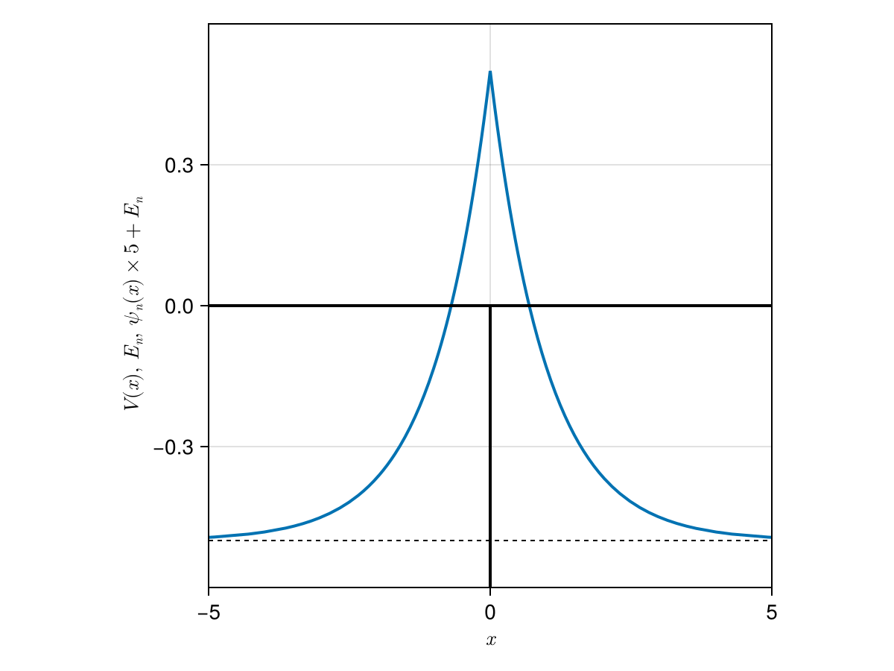

Delta Potential
The Delta potential is one of the simplest models for quantum mechanical system in 1D. It always has one bound state and its wave function has a cusp at the origin.
Definitions
This model is described with the time-independent Schrödinger equation
\[ \hat{H} \psi(x) = E \psi(x),\]
and the Hamiltonian
\[ \hat{H} = - \frac{\hbar^2}{2m} \frac{\mathrm{d}^2}{\mathrm{d}x ^2} + V(x).\]
Parameters are specified with the following struct.
Parameters
Antique.DeltaPotential — TypeDeltaPotential(α=1.0, m=1.0, ℏ=1.0)
$\alpha$ is the potential strength, $m$ is the mass of particle and $\hbar$ is the reduced Planck constant (Dirac's constant).
Potential
Antique.V — MethodV(model::DeltaPotential, x)
\[V(x) = -\alpha \delta(x).\]
Eigen Values
Antique.E — MethodE(model::DeltaPotential)
\[E = - \frac{m\alpha^2}{2\hbar^2}\]
Eigen Functions
Antique.ψ — Methodψ(model::DeltaPotential, x)
\[\psi(x) = \frac{\sqrt{m\alpha}}{\hbar} \mathrm{e}^{-m\alpha |x|/\hbar^2}\]
Usage & Examples
Install Antique.jl for the first use and run using Antique before each use. The energy E(), wavefunction ψ(), potential V() and some other functions are suppoted. In this system, the model is generated by DeltaPotential and several parameters α, m and ℏ are set as optional arguments.
using Antique
DP = DeltaPotential(α=1.0, m=1.0, ℏ=1.0)Parameters:
julia> DP.α1.0julia> DP.m1.0julia> DP.ℏ1.0
Eigen values:
julia> E(DP)-0.5
Wave functions:
using CairoMakie
# setting
f = Figure()
ax = Axis(f[1,1], xlabel=L"$x$", ylabel=L"$\psi(x)$")
# plot
w = lines!(ax, -5..5, x -> ψ(DP, x))
f
Potential energy curve, Energy levels, Wave functions:
using CairoMakie
# settings
f = Figure()
ax = Axis(f[1,1], xlabel=L"$x$", ylabel=L"$V(x),~E_n,~\psi_n(x) \times 5 + E_n$", aspect=1, limits=(-5,5,-0.6,0.6))
# hidespines!(ax)
# hidedecorations!(ax)
# energy
hlines!(ax, E(DP), color=:black, linewidth=1, linestyle=:dash)
# wave function
lines!(ax, -5..5, x -> E(DP) + ψ(DP,x), linewidth=2)
#potential
lines!(ax, [-5,0,0,0,5], [0,0,-1,0,0], color=:black, linewidth=2)
f
Testing
Unit testing and Integration testing were done using numerical integration (QuadGK.jl). The test script is here.
Normalization of $\psi(x)$
\[\int_{-\infty}^{\infty} \psi^\ast(x) \psi(x) ~\mathrm{d}x = 1\]
α | m | ℏ | analytical | numerical
--- | --- | --- | ----------------- | -----------------
0.1 | 0.1 | 0.1 | 1.000000000000 | 1.000000000000 ✔
0.1 | 0.1 | 1.0 | 1.000000000000 | 1.000000000000 ✔
0.1 | 0.1 | 7.0 | 1.000000000000 | 1.000004676239 ✔
0.1 | 1.0 | 0.1 | 1.000000000000 | 1.000000000000 ✔
0.1 | 1.0 | 1.0 | 1.000000000000 | 1.000000000000 ✔
0.1 | 1.0 | 7.0 | 1.000000000000 | 0.999999999999 ✔
0.1 | 7.0 | 0.1 | 1.000000000000 | 1.000000000000 ✔
0.1 | 7.0 | 1.0 | 1.000000000000 | 1.000000000000 ✔
0.1 | 7.0 | 7.0 | 1.000000000000 | 1.000000000000 ✔
1.0 | 0.1 | 0.1 | 1.000000000000 | 1.000000000000 ✔
1.0 | 0.1 | 1.0 | 1.000000000000 | 1.000000000000 ✔
1.0 | 0.1 | 7.0 | 1.000000000000 | 0.999999999999 ✔
1.0 | 1.0 | 0.1 | 1.000000000000 | 1.000000000000 ✔
1.0 | 1.0 | 1.0 | 1.000000000000 | 1.000000000000 ✔
1.0 | 1.0 | 7.0 | 1.000000000000 | 1.000000000000 ✔
1.0 | 7.0 | 0.1 | 1.000000000000 | 1.000000000000 ✔
1.0 | 7.0 | 1.0 | 1.000000000000 | 1.000000000000 ✔
1.0 | 7.0 | 7.0 | 1.000000000000 | 1.000000000000 ✔
7.0 | 0.1 | 0.1 | 1.000000000000 | 1.000000000000 ✔
7.0 | 0.1 | 1.0 | 1.000000000000 | 1.000000000000 ✔
7.0 | 0.1 | 7.0 | 1.000000000000 | 1.000000000000 ✔
7.0 | 1.0 | 0.1 | 1.000000000000 | 1.000000000000 ✔
7.0 | 1.0 | 1.0 | 1.000000000000 | 1.000000000000 ✔
7.0 | 1.0 | 7.0 | 1.000000000000 | 1.000000000000 ✔
7.0 | 7.0 | 0.1 | 1.000000000000 | 1.000000000000 ✔
7.0 | 7.0 | 1.0 | 1.000000000000 | 1.000000000000 ✔
7.0 | 7.0 | 7.0 | 1.000000000000 | 1.000000000000 ✔